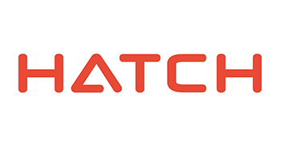
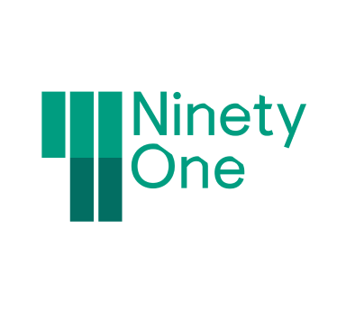
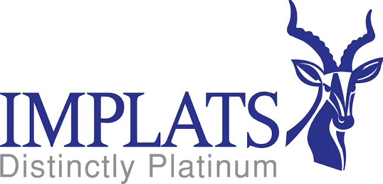
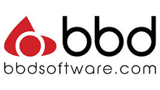
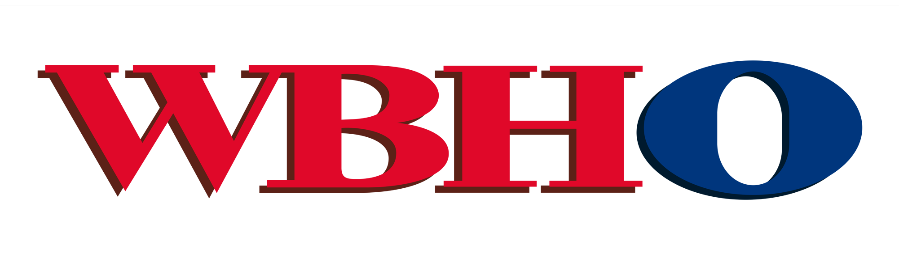
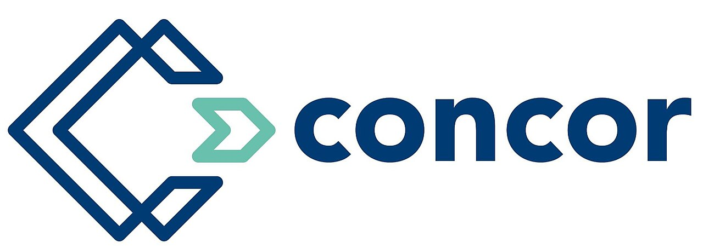

Bursaries
Explore bursary opportunities available to Engineering and Built Environment students. Opportunities are updated regularly as applications open.
Last Updated: July 2026

Hatch Bursary Programme 2027
Hatch is offering bursaries to academically deserving Engineering and Built Environment students. Successful applicants will receive financial assistance together with opportunities for vacation work and graduate employment.
Glencore Bursary Programme 2027
Glencore is offering bursaries to academically deserving Engineering and Built Environment students. Successful applicants will receive financial assistance together with opportunities for vacation work and graduate employment.
Harmony Bursary Programme 2027
Harmony is offering bursaries to academically deserving Engineering and Built Environment students. Successful applicants will receive financial assistance together with opportunities for vacation work and graduate employment.

91 Changeblazers Bursary Programme 2027
91 Changeblazers is offering bursaries to academically deserving Engineering and Built Environment students. Successful applicants will receive financial assistance together with opportunities for vacation work and graduate employment.

Impala Platinum Refineries Bursary Programme 2027
Impala Platinum Refineries is offering bursaries to academically deserving Engineering and Built Environment students. Successful applicants will receive financial assistance together with opportunities for vacation work and graduate employment.

BBD Bursary Programme 2027
BBD is offering bursaries to academically deserving Engineering and Built Environment students. Successful applicants will receive financial assistance together with opportunities for vacation work and graduate employment.
Sappi Bursary Programme 2027
Sappi is offering bursaries to academically deserving Engineering and Built Environment students. Successful applicants will receive financial assistance together with opportunities for vacation work and graduate employment.

WBHO Bursary Programme 2027
WBHO is offering bursaries to academically deserving Engineering and Built Environment students. Successful applicants will receive financial assistance together with opportunities for vacation work and graduate employment.

Concor Bursary Programme 2027
Concor is offering bursaries to academically deserving Engineering and Built Environment students. Successful applicants will receive financial assistance together with opportunities for vacation work and graduate employment.